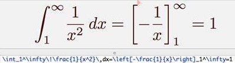

Music
The school district provided musical education starting from 5th grade.
Therefore, students were required to choose a main instrument, and a 2nd, backup instrument in case there weren't
any spots available for the main instrument. When it came time for me to choose my main instrument, I originally
decided on the trombone, and the violin as my secondary. I thought the trombone would be the
easiest instrument to learn. I thought you could memorize the positions of each note on the slide, and
blow. I also decided that the violin would be my secondary because it was the only other instrument I knew.
However, my mom convinced me to make the violin my primary instrument, and the trombone my secondary instrument.
Since there was still some time left until 5th grade, my mom put me on lessons for both instruments so I
could get a high start. I initially complained, because it was still summer break, and I didn't want to use my
break time on education since I would be receiving plenty of education from school as soon as the break ended.
However, my mom convinced me again, and I ended up taking lessons in the instruments, for which I am now grateful
for because the lessons gave me an advantage. As I learned the two instruments, I began to realize several
things:
Apparently, the trombone wasn't as simple as blowing into the instrument. You had to use your lips, your mouth, and your tongue at the same time to produce a sound. This required huge amounts of effort, leading to me quickly becoming frustrated with the trombone. Luckily, I ended up playing the violin for school, which made my life easier. I realized that math is similar to music because of how it functions. For example, in music, there are many ways to produce the same sound, just like how in math, there are many ways to solve a problem. In addition, math and music both use a significant portion of the brain. In addition, they also have standard notations. For example, in math, there is LaTeX, Wolfram Language, and many others:
While in music, there is standard notation (commonly used in the West), and there are several forms of notation that are used in the East.
Then, as I progressed through my musical journey, I began to realize that I liked music. However, math was still a dominant factor in my life. Eventually, I realized that I didn't have enough time to focus on math and music, and I had to choose one to focus on. So, I ended up ditching music and chose math, because I felt that math could be more useful. Because, after all, what's the point of making a good sound, if it won't help you academically?